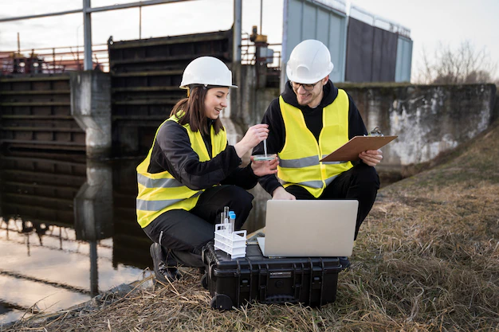

Saneamento basico
-

Saneamento básico refere-se aos serviços e infraestruturas necessários para garantir a saúde pública e a qualidade de vida das pessoas em relação à água potável, ao tratamento de esgoto e ao gerenciamento adequado de resíduos sólidos.
O saneamento básico inclui diversas áreas, como abastecimento de água potável, coleta e tratamento de esgoto, drenagem urbana e manejo de resíduos sólidos. Esses serviços são essenciais para prevenir doenças, proteger o meio ambiente e promover o desenvolvimento sustentável.
No que diz respeito à água potável, o saneamento básico envolve a captação, tratamento e distribuição de água para a população. Isso inclui a construção e manutenção de sistemas de abastecimento de água, como represas, estações de tratamento e redes de distribuição. Site
-

Quanto ao tratamento de esgoto, o saneamento básico abrange a coleta, transporte e tratamento dos efluentes sanitários. O objetivo é remover poluentes e patógenos presentes no esgoto, garantindo que ele seja tratado antes de ser descartado no meio ambiente. A drenagem urbana também é uma parte importante do saneamento básico. Ela consiste na infraestrutura necessária para coletar e conduzir as águas pluviais das áreas urbanas, evitando enchentes e alagamentos. Por fim, o manejo adequado de resíduos sólidos envolve a coleta, transporte, tratamento e disposição final dos resíduos gerados pela população. Isso inclui a reciclagem, a compostagem e a destinação correta dos resíduos, minimizando o impacto no meio ambiente.
A drenagem urbana também é uma parte importante do saneamento básico. Ela consiste na infraestrutura necessária para coletar e conduzir as águas pluviais das áreas urbanas, evitando enchentes e alagamentos.
Por fim, o manejo adequado de resíduos sólidos envolve a coleta, transporte, tratamento e disposição final dos resíduos gerados pela população. Isso inclui a reciclagem, a compostagem e a destinação correta dos resíduos, minimizando o impacto no meio ambiente.
Investir em saneamento básico é fundamental para melhorar a qualidade de vida das pessoas, prevenir doenças relacionadas à falta de acesso à água potável e ao saneamento adequado, e promover a sustentabilidade ambiental.